Woman teaching geometry, from a fourteenth-century edition of Euclid’s geometry book.
Learning Outcomes
Moving beyond Simple Linear Regression
Fitting linear models with multiple predictors.
Model Fit Statistics for evaluation
Linear Regression Assumptions and Diagnostics
Identify significant variables in a linear regression model.
Impact of Influential Observations
Multiple Linear Regression
The world is too complex for every experiment or phenomenon to be explained by a single predictor.
A general linear model with multiple predictors is more common in practice.
For a dataset with \(p\) different features and \(n\) observations, the general (linear algebraic) form of the equation is same as before. \[\begin{aligned}
\color{#1565C0}{y} &\color{#1565C0}{= X\beta + \epsilon} \text{; where}\\
y &\rightarrow \text{\textbf{response vector} of shape } \color{#1565C0}{n\times1}\\
X &\rightarrow \text{\textbf{design matrix} of shape } \color{#1565C0}{n\times(p+1)}\\
\beta &\rightarrow \text{\textbf{parameter vector} (\textit{includes intercept}) of shape } \color{#1565C0}{(p+1)\times1}
\end{aligned}\]
Normal equations still hold to provide the least-squares solution \(\hat{\beta} \text{ : } X^TX\hat{\beta} = X^Ty\)
Instead of a least squares line, we have a hyperplane!
Multiple Linear Regression
Given a collection of \(p\) potential predictors, multiple linear regression fits the following model: \[\begin{aligned}
&& E(Y|X)= \beta_{0}+\beta_{1}X_{1}+\beta_{2}X_{2}+ ... +\beta_{p}X_{p}\\
&& Var(Y|X)= \sigma^2 \rightarrow \text{error variance}
\end{aligned}\]
All the \(\beta\) s and \(\sigma^2\) are unknown parameters to be estimated.
\(\color{blue}{\text{Ordinary Least Squares}}\)(OLS) Estimator: \(\hat{\beta} = (X^TX)^{-1}X^Ty\)
In practice, we usually do not calculate the closed-form least-squares estimates of the \(\beta\) s by hand. Statistical software uses numerical linear-algebra methods to obtain the coefficient values that minimize the residual sum of squares.
For any observable pair of \((x,y)\) we have: \[\begin{aligned}
&& \hat{y} = E(Y|X=x)= \beta_{0}+\beta_{1}x_{1}+\beta_{2}x_{2}+ ... +\beta_{p}x_{p}; \quad \hat{e} = y - \hat{y}
\end{aligned}\]\(e\) is the residual or error term. Linear regression places the following assumptions on the error. \[\begin{aligned}
&& E(e|X) = 0; Var (e|X) = \sigma^2 \mathcal{I_n} \rightarrow \text{\scriptsize represents the variance covariance structure of all $n$ errors} \\
&& \textbf{Normality: } P(e|X) \sim \mathcal{N(0, \sigma^2 I_n)}
\end{aligned}\]
More on model assumptions later!
Linear Regression: Beers and BAC
Study Setup
Researchers at Ohio State University had sixteen volunteers drink a randomly drawn number of 12 ounce beer cans. Thirty minutes after drinking their last beer, each subject had their blood alcohol content (BAC) measured. Subjects had their gender and weight recorded and were also administered a road sobriety test before and after the alcohol consumption. We want to predict BAC from the remaining information available for each subject.
Aside on Categorical Variables
Our data has a categorical variable Gender_OSU whose values are converted to dummy variables.
# Define the model using an R formulamlr_formula <- BAC ~ Beers + Weight_OSU + Gender_OSU_male + Sobr1 + Sobr2# Fit the model using OLS (Ordinary Least Squares)model <-lm(mlr_formula, data = bac_data)# Print the estimated regression coefficientscoef(model)
# Define the model using R-style formulamlr_formula ='BAC ~ Beers + Weight_OSU + Gender_OSU_male + Sobr1 + Sobr2'# Fit the model using OLS (Ordinary Least Squares)model = smf.ols(formula=mlr_formula, data=bac_data).fit()# Print the summary of the regression resultsmodel.params
Our linear regression model can be symbolically expressed as: \[\begin{aligned}
BAC = 0.092460 + 0.001261 \times Gender\_OSU\_male + 0.019131 \times Beers -0.000349 \times Weight\_OSU\\
-0.003447 \times Sobr1 -0.002320 \times Sobr2
\end{aligned}\]
Your Turn
What interpretations can you make of the impact of the model variables on BAC looking at the model coefficients?
Sum of Squares
When discussing linear regression, it is common to have three types of sum of squares.
\(\color{blue}{\textbf{SST}}\): Total variability of data. \(\lVert \vec{y}-\bar{y} \rVert^2\)
\(\color{blue}{\textbf{SSR}}\): Sum of squares of Regression. This is the portion of the total variability explained by regression. \(\lVert \bar{y}-X\vec{\beta} \rVert^2 = \lVert \bar{y}-\hat{y} \rVert^2\)
\(\color{blue}{\textbf{SSE}}\): Sum of squared errors or residuals. This is the portion of the total variability that remains unexplained. \(\lVert \vec{y}-X\vec{\beta} \rVert^2 = \lVert \vec{e} \rVert^2\)
The total variability of data is the sum of the variability explained by regression and the unexplained variability that manifests as error.
\(SST = SSR+SSE\)
Given a constant total variability, a lower error will indicate better regression and a higher error will indicate less powerful regression.
Remark.
Please beware of notational differences between SSE vs RSS or SSR vs ESS depending on the text you are following. We will be consistent with the notations listed above!
Model Fit Statistics
How well does our estimated regression equation fit the data?
We will study metrics that help us evaluate the fit of a regression models.
We will learn about metrics that help us draw statistical inferences around our model’s fit.
We will test existing packages that help us draw both predictions and inferences from our fitted model.
Base R already has built-in support for linear regression and model fit statistics.
For predictive purposes sklearn is the standard Python package to use.
We can use the statsmodels package to organize all relevant information for statistical inference in an ANOVA table.
Model Fit Statistics: \(\color{blue}{\text{Coefficient of Determination}}\)
\(R^2\) measures what proportion of the total variability of the response variable is explained by the model. It always falls between 0 and 1, with values closer to 1 representing better model fit. \[\scriptsize R^2 = \frac{SSR}{SST} = 1 - \frac{SSE}{SST}\]
R
model_summary <-summary(model)model_summary
Call:
lm(formula = mlr_formula, data = bac_data)
Residuals:
Min 1Q Median 3Q Max
-0.0221698 -0.0043422 0.0006911 0.0068117 0.0127175
Coefficients:
Estimate Std. Error t value Pr(>|t|)
(Intercept) 9.246e-02 1.594e-01 0.580 0.574748
Beers 1.913e-02 2.117e-03 9.037 3.99e-06 ***
Weight_OSU -3.487e-04 7.447e-05 -4.682 0.000865 ***
Gender_OSU_male 1.261e-03 9.517e-03 0.133 0.897212
Sobr1 -3.447e-03 1.647e-02 -0.209 0.838388
Sobr2 -2.320e-03 3.631e-03 -0.639 0.537234
---
Signif. codes: 0 '***' 0.001 '**' 0.01 '*' 0.05 '.' 0.1 ' ' 1
Residual standard error: 0.01148 on 10 degrees of freedom
Multiple R-squared: 0.9549, Adjusted R-squared: 0.9324
F-statistic: 42.39 on 5 and 10 DF, p-value: 2.057e-06
model_summary$r.squared
[1] 0.9549428
Python
model.summary().tables[0]
OLS Regression Results
Dep. Variable:
BAC
R-squared:
0.955
Model:
OLS
Adj. R-squared:
0.932
Method:
Least Squares
F-statistic:
42.39
Date:
Tue, 20 Oct 2026
Prob (F-statistic):
2.06e-06
Time:
12:49:06
Log-Likelihood:
52.538
No. Observations:
16
AIC:
-93.08
Df Residuals:
10
BIC:
-88.44
Df Model:
5
Covariance Type:
nonrobust
model.rsquared
np.float64(0.954942792460181)
An aside on Degrees of Freedom
You may have seen this concept come up often in statistics and data science. Generally speaking, degrees of freedom represents the number of independent values that are free to vary during the calculation of a statistic.
Degrees of Freedom for Sample Variance. For a dataset with n observations \(Y = {y_1, y_2,..., y_n}\), sample variance calculation uses the sample mean, \(\bar{y} = \frac{1}{n}\sum_{i=1}^{n}y_{i}\). Variance also requires calculating the squared deviation \((y_{i}-\bar{y})^2; \forall i\). However, knowing the first \(n-1\)\(y\)-terms implies that we can infer the last term \(y_n = n\bar{y} - \sum_{i=1}^{n-1}y_{i}\), thereby no longer making it a free (to vary) variable. Hence the calculation of sample variance has a degree of freedom of \(n-1\).
You may have already seen this in the formula for sample variance \(\frac{1}{n-1}\sum_{i=1}^{n}(y_{i}-\bar{y})^2\), where the sum of squares is divided by the degrees of freedom instead of the number of samples!
Remark.
Dividing the sum of squares by \(n-1\), instead of the sample size \(n\), to calculate the sample variance is called Bessel’s correction. This is a necessary statistical adjustment that avoids potential underestimation and ensures that the sample variance provides an unbiased estimate of the population variance. This is especially crucial for small samples where the correction makes a significant difference.
Degrees of Freedom in Regression
In linear regression we are dealing with two types of degrees of freedom.
\(\color{blue}{\textbf{Total Degrees of Freedom}}\): You can think of it as the degrees of freedom for SST. Follows from the previous discussion that this is given by \(n-1\), with \(n\) being the number of observations.
\(\color{blue}{\textbf{Residual Degrees of Freedom}}\): You can think of it as the degrees of freedom for SSE, i.e. the sum of squared residuals. For a regression model with \(p\) feature coefficients (hyperplane of \(p+1\) vectors including the intercept), the residual degrees of freedom is given by \(n-p-1\).
Remember, \(p\) is the \(\color{blue}{\textbf{number of predictors}}\) in your regression model coming from the data (excluding the intercept).
Model Fit Statistics: Adjusted \(R^2\)
A fairly big disadvantage of \(R^2\) is the fact that it is non-decreasing. Given that \(R^2\) is a measure of fit where model coefficients are calculated using OLS (by minimizing the SSE), its mathematical form ensures that adding more than necessary predictors will still result in the best possible fit with those variables.
Mathematically, adding more variables cannot increase the sum of squared residuals because the new model has more degrees of freedom to minimize these residuals. Even by adding unrelated variables, SSE can stay the same (when the corresponding coefficients are set to 0). Or worse, even decrease variation of the response variable by capturing correlations with new predictors that exist purely due to random chance. Reminder, SSE is inversely related to \(R^2\).
Since \(R^2\) does not guarantee adding more predictors will always lead to models with more explanatory power, we need an alternative!
Adjusted \(R^2\) factors in a model’s degrees of freedom (higher for those with more variables). It is bounded between 0 and 1, with values closer to 1 being more desirable. \[
R^2_{adj} = 1- \frac{SSE}{SST}\frac{n-1}{n-p-1} = 1 - (1-R^2)\frac{n-1}{n-p-1}
\]
Overfitting: A model with too many predictors may fit the training data very well but fail to generalize to new data. Adjusted \(R^2\) helps mitigate this risk by penalizing models for inclusion of irrelevant predictors.
Model Fit Statistics: Adjusted \(R^2\)
R
model_summary <-summary(model)model_summary
Call:
lm(formula = mlr_formula, data = bac_data)
Residuals:
Min 1Q Median 3Q Max
-0.0221698 -0.0043422 0.0006911 0.0068117 0.0127175
Coefficients:
Estimate Std. Error t value Pr(>|t|)
(Intercept) 9.246e-02 1.594e-01 0.580 0.574748
Beers 1.913e-02 2.117e-03 9.037 3.99e-06 ***
Weight_OSU -3.487e-04 7.447e-05 -4.682 0.000865 ***
Gender_OSU_male 1.261e-03 9.517e-03 0.133 0.897212
Sobr1 -3.447e-03 1.647e-02 -0.209 0.838388
Sobr2 -2.320e-03 3.631e-03 -0.639 0.537234
---
Signif. codes: 0 '***' 0.001 '**' 0.01 '*' 0.05 '.' 0.1 ' ' 1
Residual standard error: 0.01148 on 10 degrees of freedom
Multiple R-squared: 0.9549, Adjusted R-squared: 0.9324
F-statistic: 42.39 on 5 and 10 DF, p-value: 2.057e-06
model_summary$adj.r.squared
[1] 0.9324142
Python
model.summary().tables[0]
OLS Regression Results
Dep. Variable:
BAC
R-squared:
0.955
Model:
OLS
Adj. R-squared:
0.932
Method:
Least Squares
F-statistic:
42.39
Date:
Tue, 20 Oct 2026
Prob (F-statistic):
2.06e-06
Time:
12:49:06
Log-Likelihood:
52.538
No. Observations:
16
AIC:
-93.08
Df Residuals:
10
BIC:
-88.44
Df Model:
5
Covariance Type:
nonrobust
model.rsquared_adj
np.float64(0.9324141886902715)
Model Fit Statistics: RMSE
Root Mean Squared Error (RMSE) is an alternative simple metric to compare regression models. It is the square root of the average squared error (residual) of predictions made by a model. \[
RMSE = \sqrt{\frac{SSE}{n}} = \sqrt{\frac{\sum\limits_{i=1}^{n}(y_i - \hat{y_i})^2}{n}}
\]
There is no scale for RMSE! You have to compare it to the RMSE for another model fit from the same data. Smaller values are more desirable.
R
# Calculating predicted values and RMSEfitted2 <-predict(model)sqrt(mean((bac_data$BAC - fitted2)^2))
[1] 0.009071924
Python
#Calculating predicted values and RMSEfitted2 = model.predict()np.sqrt(metrics.mean_squared_error(bac_data["BAC"], fitted2))
np.float64(0.009071924032251965)
Model Fit Statistics: RSE
This metric can go by a few different names:
Residual Standard Error (RSE)
Standard Error of the Regression
Standard Error of Fit
It is an unbiased estimate of the standard deviation of the error term in a regression model; i.e., it is the square root of the variance of estimated residuals. As explained before, when working with sample data, the calculation is adjusted for the number of degrees of freedom.
It is the average distance between an observation from a sample of data and the regression hyperplane (line in 2D) in units of the response variable.
Think of it as a measure showing how tightly the observations surround the regression hyperplane.
Can be used to make prediction intervals, more on this later!
RSE in practice
Like RMSE, there is no scale for RSE! You have to compare it to the RSE for another model fit from the same data. Smaller values are more desirable.
While the RSE is not directly available in the summary table of statsmodel it is defined within the package as the square root of mean squared error of the residuals. In R, it is obrained using the sigma() function applied to a fitted model object.
Please beware that this is not the RMSE which is a regular average of mean squared error and not corrected with division by the appropriate degrees of freedom. This can be confusing!
R
rse <-sigma(model)print(rse)
[1] 0.01147518
Python
rse = np.sqrt(model.mse_resid)print(rse)
0.011475177080774014
Variable Significance
Regression Analysis can help us understand the statistical significance of variables in an experiment as potential predictors of the response.
A typical framing: Is the number of beers a student drinks a statistically significant predictor of the student’s blood alcohol content, all other factors held equal?
To answer this we estimate the statistical significance of the regression model’s coefficient associated with this variable.
We conduct a hypothesis test at a certain pre-determined significance level (\(\alpha = 5\%\)).
Is the predictor’s model coefficient (statistically) significantly different from 0?
Null Hypothesis is assumption of no significance \(H_0: \beta_{Beers} = 0\).
Alternative Hypothesis \(H_A: \beta_{Beers} \neq 0\).
Variable Significance
We can use the \(\color{blue}{\textbf{Standard Error of Model Coefficients}}\) and known sampling distributions to develop inference around our model predictors.
Remember that the regression model is fitted around a sample. So much like sample mean, the model coefficients (parameters) are also estimates that are subject to an underlying sampling distribution(how they’d vary across samples).
For a linear model, the OLS estimator is \(\hat{\beta} = (X^TX)^{-1}X^Ty\). By substituting \(y = X\beta + \epsilon\) we get, \(\hat{\beta} = \beta + (X^TX)^{-1}X^T\epsilon\)
Turns out that upon deriving the OLS estimator:
Estimates of individual model coefficients are normally distributed
Standardized coefficients individually follow a Student’s T Distribution. Also called the observed \(t\)-statistics of the model coefficients.
\(\frac{\hat{\beta}_j-\beta_j}{se(\hat{\beta}_j)} \sim \mathcal{t}_{n-p-1}\); \(\beta_j\) reflects your prior belief in the predictor’s coefficient. Typically set to 0.
The standard error of model coefficient \(\hat{\beta}_j\) is \(se(\hat{\beta}_j) = \sqrt{se^2 (X^TX)^{-1}_{jj}}\), where \(se\) is the standard error of regression.
For simple linear regression, the standard error of the slope is given by \(se(\hat{\beta}_1) = \sqrt{ \frac{se^2}{\sum_{i=1}^n(x_i-\bar{x})^2}}\)
Variable Significance with Hypothesis Testing
It’s good practice to follow these steps for any hypothesis test:
Identify sample statistics, in this case model coefficient of the predictor of interest, and determine what significance level you wish to use.
Check if model (linear regression) conditions hold. More on that later!
Compute the standard error of model coefficient and corresponding \(t\)-statistic. Calculate the two-tailed \(p\)-value for this \(\lvert t \rvert\)-statistic.
Alternatively, we can also refer to the \(t\)-critical value of a two-tailed \(t\) test at the desired significance level.
We must factor in the correct number of degrees of freedom!
Variable Significance in Practice
The \(\lvert t \rvert\)-statistic statistic for \(\beta_{Beers}\) is 9.037(very high), and the corresponding \(p\) value is rounded to 0.000
This \(p\) value is lower than any reasonable significance level including \(\alpha=0.05\). Hence we reject the null hypothesis.
We conclude that there is statistically significant evidence that the number of beers a student drinks can help predict the student’s BAC.
Your Turn Can you comment on the significance of the other predictors?
Confidence Intervals for Model Coefficients
Alternatively we can draw the 95% confidence interval (CI) of the model coefficient in question.
As we know, confidence intervals are an effective way of capturing the uncertainty around a sample estimate. A 95% confidence interval means that if we repeated drawing samples from the population and also conducted regression analysis many times, the true (population) coefficient for the predictor will be present within 95% of the calculated intervals.
If the interval does not contain 0 then we can infer that the predictor, whose coefficient we have been analyzing, has statistical significance in predicting the response variable.
The summary table output also provides us with the 95% confidence intervals of each predictor. However, we can also draw intervals upon setting the significance level as we see fit.
Your Turn Do the CIs drawn for each predictor back up your previous inference regarding their statistical significance to predict BAC?
Uncertainty in Predictions
As mentioned before, regression models are fitted on a sample of data drawn from an underlying population. As such, not only the model coefficients, but also the prediction estimates are subject to uncertainty. Regression is not deterministic!
Sources of uncertainty in prediction.
Uncertainty in predictor values: Data sampled from a population of North American adults to estimate BAC might be very different from those sampled from a population of adults in the Indian subcontinent.
Out-of-Distribution data or Selection Bias.
Uncertainty in coefficient values: This points to your inherent sampling variability even when pulling data from fixed populations. We have discussed this already.
Variation in the actual outcome even given perfect knowledge of predictors/coefficients.
For example, two individuals with the same weight and gender, drawn from the same population, drinking the same number of beers over the same time period may get two different BACs due to a variety of factors.
Uncertainty in Predictions
In addition to reporting confidence intervals for model coefficients \(\beta\), we might want to draw similar inferences around model predictions.
Reminder What we estimate as prediction \(\hat{y}\) is the expected value of the response variable given the observation of predictors \(x\).
Prediction with Linear Regression
For any given observation, the regression model produces the expected value of a distribution of possible responses modelled by factoring in Gaussian noise.
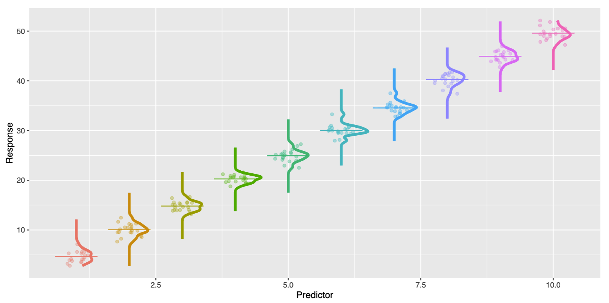
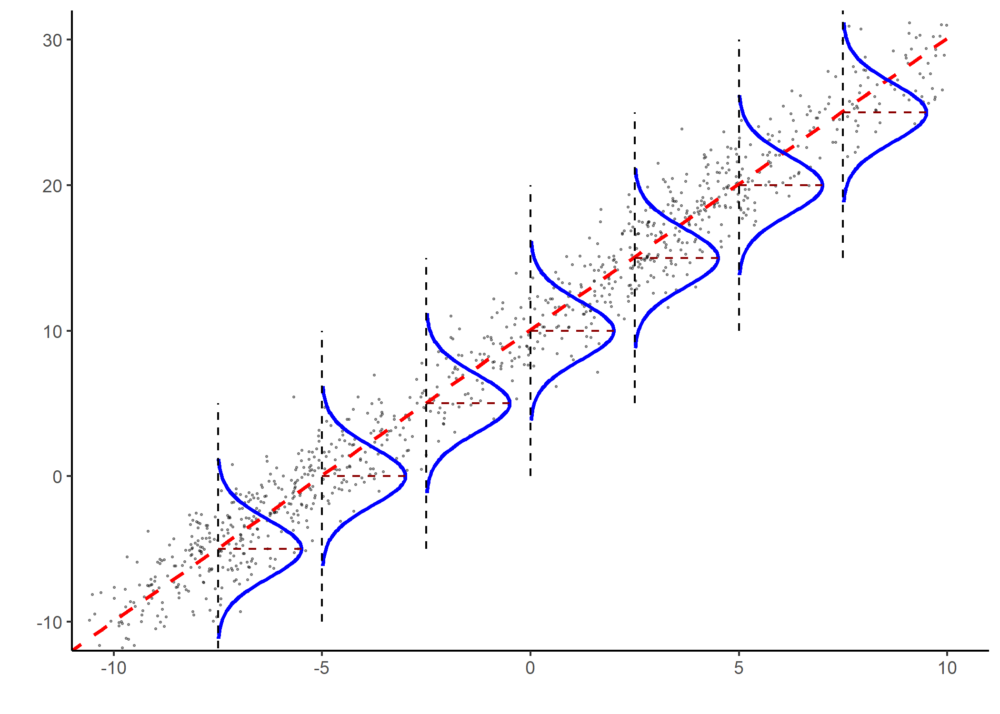
Multicollinearity
The issue of linearly dependent (or “almost” linearly dependent) column/variables is called multicollinearity. Multicollinearity occurs when a variable is highly or perfectly correlated with a linear combination of one or more columns.
Intuitively, this means that the variable can be deduced from other variables and thus is not capable of adding new information to the model.
Structural Multicollinearity: Creating new predictors from other predictors through mathematical transformations. This is a design issue but does not reflect a problem with the data itself.
For example, multicollinearity can occur when \(p\) dummy variables are incorporated into a model instead of \(p-1\) for a categorical variable that has \(p\) levels.
Data-based multicollinearity: Result of a poorly designed experiment, reliance on observational data where variables naturally move together. Why can’t a researcher just collect his data in such a way to ensure that the predictors aren’t highly correlated?
Unfortunately, researchers often can’t control the predictors. For example when gathering a person’s gender, race, grade point average, math SAT score, IQ, and starting salary, one or more variables maybe dependent on others but data collectors in such observational studies cannot control for them.
Big problem Design matrix \(X\) having dependent columns is a violation of a key condition!
Multicollinearity
statsmodels should give you a warning when you have issues with multicollinearity. It’s good practice to check your models even if you don’t see this warning!
First check: Derive a correlation matrix of your predictors. Do not include the response variable as we want our predictors to have high correlation with it.
Second check: Variance Inflation Factor to systematically remove variables that can be explained by others.
\(VIF = \frac{1}{(1-R^2_x)}\); where \(R^2_x\) is the variation in \(x\) that can be explained by its relationship to other variables in the model.
Treat x as the response variable that you are trying to predict from the remaining explanatory variables. Calculate \(R^2\) of this auxiliary regression. VIF over 10 is worrisome.
While the overall model seems statistically significant, some predictors have high \(p\) values and relatively higher standard error. Let’s investigate further by computing VIF of all predictors
Investigating the VIF table, we see that none of the predictors are severely collinear to each other and their VIFs are all below 10. This is good news and the high \(p\) values cannot be attributed to multicollinearity!
However, for datasets where the number of predictors is large, it is possible that some predictors are highly collinear with each other. In such cases, we can use the VIF table to identify and progressively remove the most collinear predictor and refit the model until VIFs are acceptable again.
The impact of sample size
In the BAC example, we have 16 samples and for a model with 6 parameters (an intercept plus five slopes) \(df_\text{residual} = 16-6= 10\).
So the model might explain BAC very well but with only 16 observations and several predictors, there may not be enough information to estimate every predictor’s unique contribution precisely. This could explain the considerable uncertainty around some predictors in our post regression analysis given we are trying to estimate several effects from a very small dataset.
Multicollinearity handling
One caveat to consider before removing a predictor with a high VIF score is its substantive importance in predicting or explaining the response variable. For example, suppose the VIF table reveals a high score for Weight_OSU, while the regression summary indicates that, holding beers consumed, gender, and sobriety scores constant, weight is significantly associated with BAC. This would suggest that Weight_OSU shares substantial information with other predictors, but still contributes unique information about BAC.
Ask yourself: does weight provide more meaningful interpretive value than, for example, one of the sobriety-test scores for the research question? If so, do not blindly remove it!
Instead, investigate why the predictors are collinear. For example, Weight_OSU might be associated with gender if male and female participants tend to differ systematically in weight. Depending on the research question, possible responses to problematic multicollinearity include:
retaining an important predictor despite its high VIF;
removing one of two predictors that measure largely redundant information;
combining closely related predictors when scientifically defensible; or
collecting additional observations that provide more independent variation among the predictors.
Centering or standardization does not generally remove data-based multicollinearity between distinct predictors.
It is more useful to alleviate certain forms of structural multicollinearity, such as that introduced by polynomial or interaction terms, reducing VIF without changing model fit or inference for slopes.
Assumptions of Linear Regression
Some key conditions essential to linear regression:
Linearity: We predict the expected response \(E(Y)\) for a given observation \(X\) and it exhibits a linear relationship with the explanatory variables (predictors) in \(X\)
Independent Residuals: The error terms \(\epsilon_i\) for each prediction (also known as the residual) are independent, meaning that the value of the error for one case gives no information about the value of the error for another case.
Normality of Residuals: The error terms \(\epsilon_i\) for each prediction are n.i.d., i.e. normally distributed around the regression hyperplane (line in 2D).
Equality of Variance: The error terms \(\epsilon_i\) have the same variance for all observations
An equivalent way to think of linearity is that the conditional mean of the error, \(E(\epsilon_i|X_i)=0\) . If the model perfectly captured the average trend, then any deviation (residual) above the line should be cancelled by the ones below it, thereby keeping the average error at 0.
All four conditions can be summed up by: \[
P(e|X) \sim \mathcal{N(0, \sigma^2 I_n)}
\]
Next we will see how to check if each of these conditions holds.
Linearity
You can check this assumption using scatterplots – one for each predictor vs the response variable.
You can also check for linearity with a scatterplot of the (standardized) residuals, against the predicted values (on the horizontal axis).
What do you do if your data are not linear?
Transformations (log, square root, inverse, etc.) on either the predictors or responses.
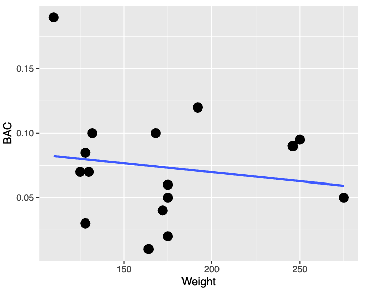
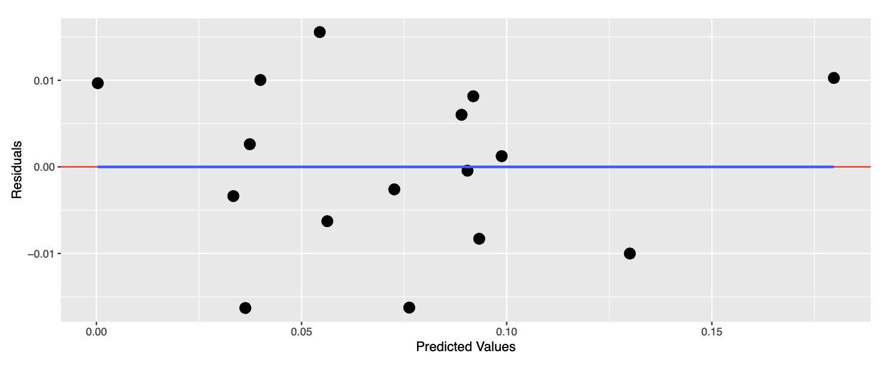
Independence and Uncorrelated Residuals
We are assuming that each observation and corresponding residual is independent from all of others. What we want to check is for the residuals to be uncorrelated, no general pattern among the residuals across observations or predicted values.
Scatterplots of residuals against predictors and response variables.
Most commonly violated in
Time-series data
Spatial data
Normality of Residuals
For the usual inferential procedures in linear regression, we assume that the errors around the fitted regression model are approximately normally distributed: \[
\epsilon_i= y_i-\hat{y}_i; \epsilon_i \sim N(0,\sigma^2)
\]
If residuals are standardized, we expect them to approximately follow a standard normal distribution.
In practice, we therefore look for a residual distribution that is:
approximately symmetric and bell-shaped,
centered around zero, and
without substantial departures in the tails.
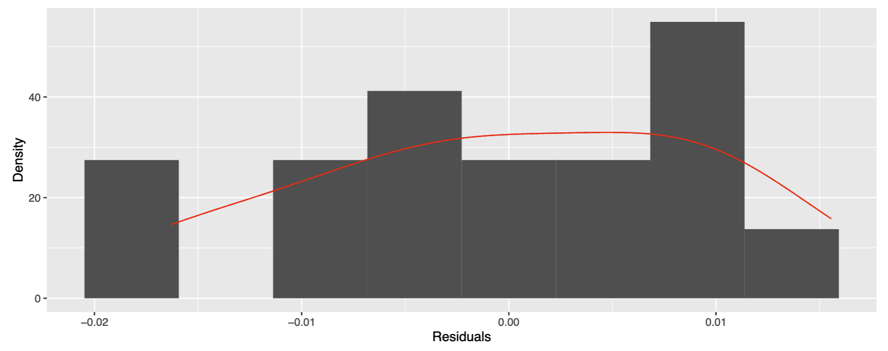
Possible remedies: Non-linear transformations (log, square root, inverse, etc.) on either the predictors or responses.
Checking Normality of Residuals
We should use visual diagnostics and a formal test together when assessing residual normality.
Visual checks
Histogram of residuals
Look for an approximately symmetric, bell-shaped distribution centered near zero.
Useful for seeing skewness, multiple modes, and unusual observations.
Normal Q–Q plot
Compares the observed standardized residuals (\(Y\)-axis) with the quantiles that are expected (\(X\)-axis) under a normal distribution.
Residuals that are approximately normal should fall reasonably close to the diagonal reference line.
Systematic curvatures or \(S\)-shaped patterns around the line or strong departures in the tails suggest violations of normality.
Shapiro–Wilk test
The Shapiro–Wilk test formally evaluates:
\[\begin{aligned}
H_0 &:\text{residuals are consistent with normality}\\
H_A &:\text{residuals depart from normality}
\end{aligned}
\]
Small \(p\)-value: evidence against normality.
Large \(p\)-value: insufficient evidence to reject normality; it does not prove that the residuals are normal.
What to use
Use the test alongside the Q-Q plot that is generally more diagnostically useful than expecting a histogram, especially with a small dataset such as the BAC example. With only 16 observations, a histogram can look quite irregular even when the underlying errors are reasonably normal, and the Shapiro–Wilk test also has limited power to detect departures.
What if residual normality is violated?
What does not break:
Least-squares coefficient estimates
Linearity of the fitted model
\(R^2\)
Prediction accuracy (subject to the presence of outliers)
Although the tests and confidence intervals originate from normal distributions, the consequences are usually minor because the formulas are based on the sampling distributions of the estimates.
What does break:
Hypothesis tests
Confidence intervals for means
Prediction intervals
Outlier diagnostics (more on this later!)
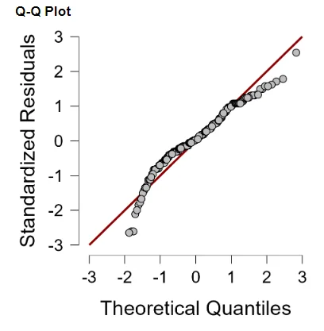
These inferential procedures make stronger assumptions about normality; consequently, the usual \(t\)-statistics and related inference may no longer be reliable.
Equality of Variance
We can plot the residuals against the predictors.
What we want is Homoscedasticity: equal spread of residuals along either side of the mean response for all observations.
Violation of this condition is called Heteroscedasticity and it has far more serious consequences.
Standard errors inaccurately describe the uncertainty in the estimates, as a consequence means tests, confidence intervals and p-values can be misleading.
Could rebuild the model with different independent variables.
Perform transformations on non linear data or fit other (non linear) models.
Homoscedasticity
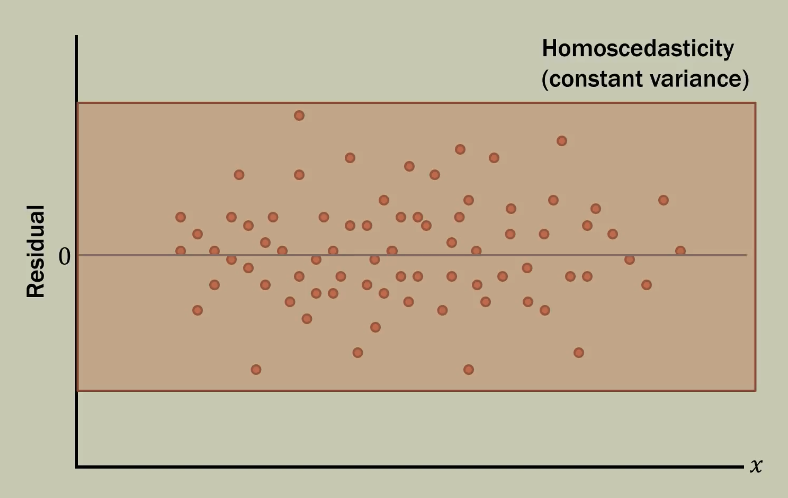
Heteroscedasticity
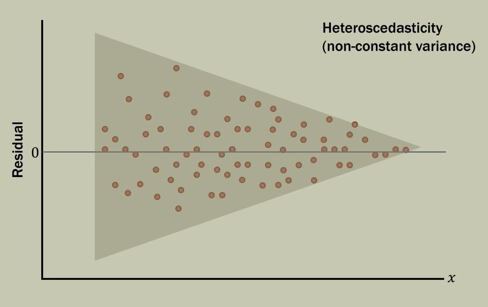
Non Linearity
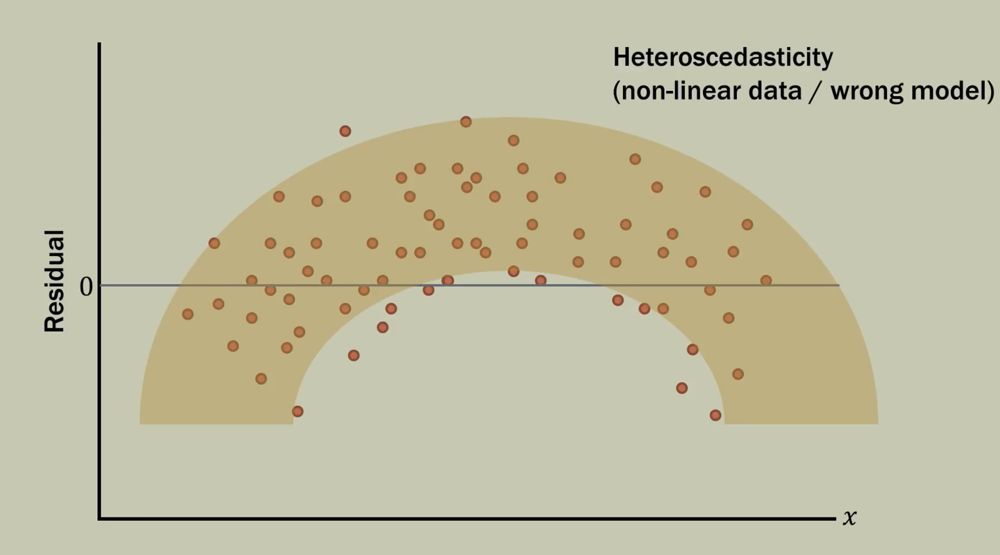
Outliers and Influential Observations
Always do scatter-plots. They are conceptually simple but can reveal the shape and pattern of your data and reveal a lot of information.
Outliers: Can influence the regression line/hyperplane by pulling it in the direction of the outlier.
A value that can appear out of the norm or extreme for at least one of the variables; does not follow the predicted pattern of the model.
A point whose value may fall within the expected range but produces an extremely large residual.
Removing an observation simply because it is an outlier is not a good idea, but it is also not a good idea to report a conclusion that rests on one or two data points.
Outliers and Influential Observations
Influential Observation: It could be an outlier, but not necessarily. The point has a disproportionate effect on model estimates and interpretations.
High Leverage Point: Could be a value corresponding to an observation that horizontally further away from the rest of the observations in the sample. These points exhibit very strong influence on the least squares plane. Some outliers are high leverage points, but all high leverage points are NOT outliers.
It could be a value of the dependent variable that is far outside of the rest of the values for the data.
Outliers vs. Influential Observations
Outliers are unusual in the response. Influential observations are unusual in how much they affect the fitted model.
Influential observations can substantially change:
regression coefficients,
the strength and direction of relationships between predictors and the response,
model significance, and
standard errors.
Influential Observations
Influential points are observations that substantially influence the slope of the fitted regression line. They are often (but not always) high-leverage points.
Influence is a combination of leverage and how extreme a point is in the \(y\)-direction.
Influential points could change a strong relationship to a weak relationship.
Influential points could change a weak relationship to a strong relationship.
High-leverage outlier points can be very influential!
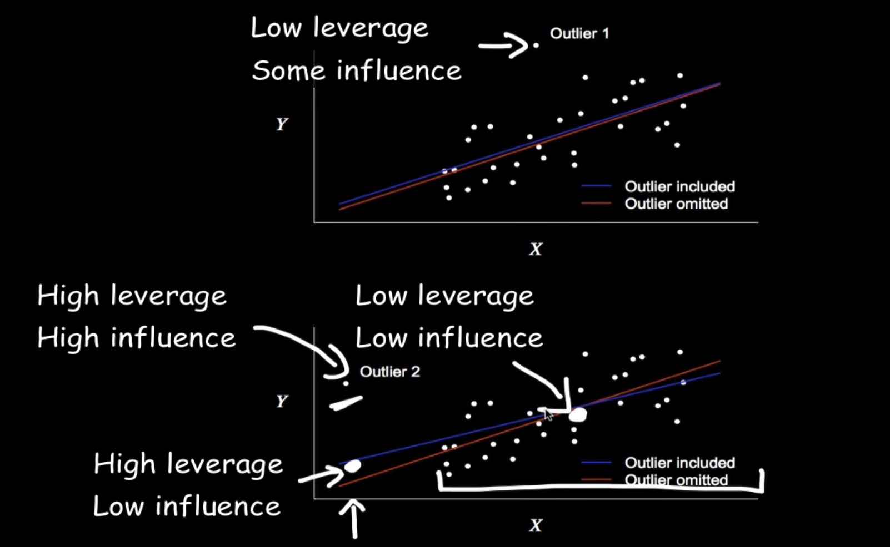
How to deal with influential observations?
One way to assess the influence of an observation is to temporarily remove the observation to see whether the answers to the questions of interest change.
Does the evidence from a test change from slight to convincing? Does the decision to include a term in the model change?
Does an important estimate change by a practically relevant amount?
If not, the observation is not influential.
If so, we need to deal with it!
If an influential observation is not particularly unusual in its explanatory variables, and if no definitive explanation for its unique behavior can be found, omitting it cannot be justified.
More data are needed to answer the questions of interest.
As a last resort, report sensitivity: the results with and without the influential observation.
Case-Influence Statistics
Case-influence statistics are numerical measures that reveal insight regarding individual influence of each observation (or “case”) on the overall regression.
They can help identify influential observations that may not be visible in a graph
They partition the overall influence of an observation into what is unusual about its explanatory variable values and what is unusual about its response relative to the fitted model.
We will discuss three different types of case-influence statistics:
Leverage
Studentized residuals
Cook’s distance.
Leverage
The leverage of a case is a measure of the distance between its explanatory values and the average of the explanatory variable values in the entire dataset.
For simple linear regression with one predictor, leverage is given as the proportion of the total sum of squares in \(X\) due to a single case, but it can also be re-expressed as the distance from the center of the dataset in terms of standard deviations. \[
h_i = \frac{(X_i-\bar{X})^2}{\sum(X_i-\bar{X})^2} + \frac{1}{n}
\]
For multiple explanatory variables, the calculation is more involved (not included) but the concept is the same: proportion of the total sum of squares due to a single case.
Rule of thumb: Although model dependent, if \(h_i>2\frac{p+1}{n}\) the case should be flagged.
Estimating Leverage in Practice
Let us check the leverage of individual observations on a reduced model to predict BAC that uses 4 predictors. As we will see, there are some high leverage points.
Cook’s distance measure the effect that omitting a case has on the estimated regression coefficients. Joint effect of leverage and residual. \[D_i = \sum\limits_{j=1}^{n}\frac{\hat{y_{j(i)}}-\hat{y_j}}{p\times se^2}\] where \(\hat{y_j}\) is the \(j\)-th fitted value in a fit using all points, \(\hat{y_{j(i)}}\) is the \(j\)-th fitted value in a fit that excludes the \(i\)th point in the dataset, \(p\) is the number of regression coefficients, and \(se^2\) is our estimated variance from the fit based on all observations (the square of our standard error as seen many times before).
A case that is influential in changing the least squares estimates when deleted will have a high Cook’s Distance.
Rule of thumb: \(\approx\) 1 or above indicate large influence.
R
# Get Cook's distancecooks_d <-cooks.distance(model2)print(cooks_d)
It is difficult, though not mathematically impossible, for a genuinely low-leverage observation to have a very large Cook’s distance.
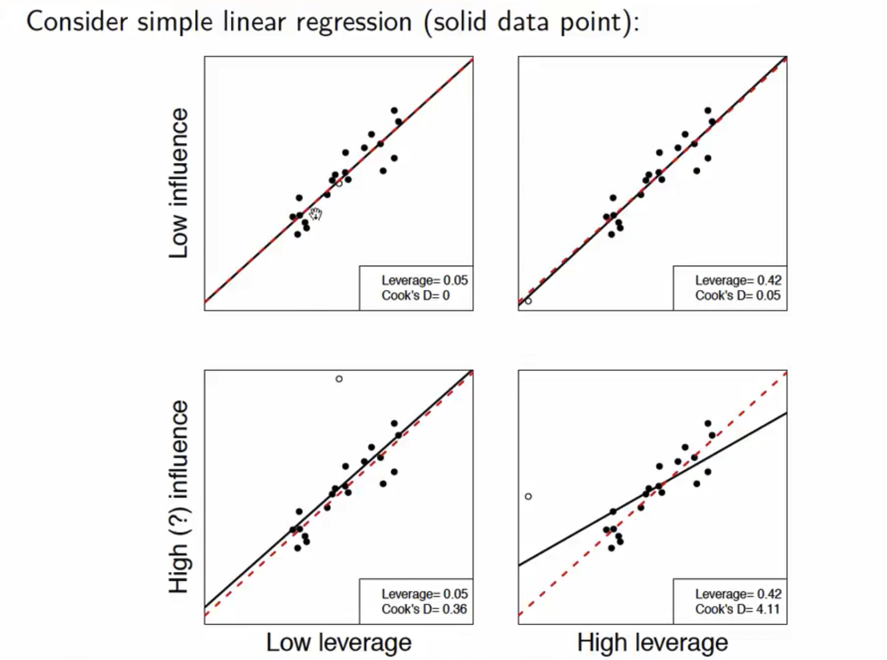
Studentized residuals
A high leverage point is one where the observation is further away from the general trend of predictor values, i.e. a sparse region of the predictor(feature) space. Since the regression model is forced to pass close to the point, its residual is naturally constrained to have smaller variance. In such a case, the residual plot will not direct any attention even if the corresponding observation is influential or problematic, relative to its natural scale.
A high leverage point can have a small residual and yet be highly influential. This is why influence \(\neq\) outlier and leverage must be accounted for. On the contrary, large residuals at low-leverage points can look alarming but often don’t matter.
Raw residuals can be misleading. Hence we standardize them while also rescaling them to their natural variability.
What is a large residual and what is not is unclear without standardization?
Studentized residuals
Studentized Residual: This ensures that our residuals approximately follow a standard normal distribution. 95% of the residuals must fall between -2 and 2 and those beyond that can be considered unusual.
Internally studentized residual: \(\frac{e_i}{se\sqrt{1-h_i}}\); \(h_i\) is the leverage of the corresponding observation
Externally studentized residual: \(\frac{e_i}{se_{(i)}\sqrt{1-h_i}}\); \(se_{(i)}\) is the estimated standard deviation of fit after removing the observation in question